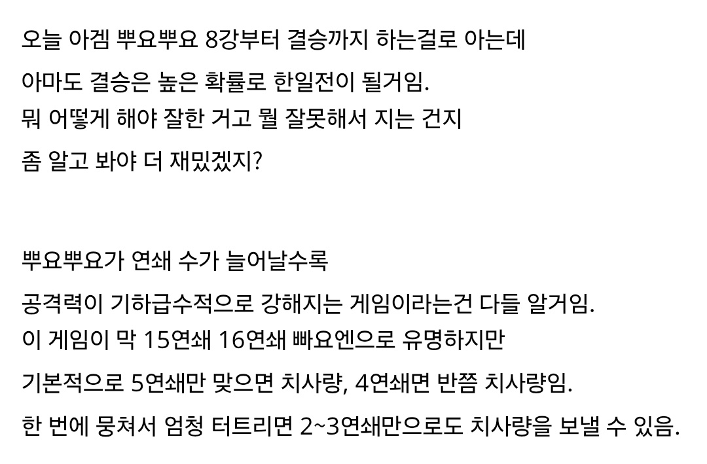
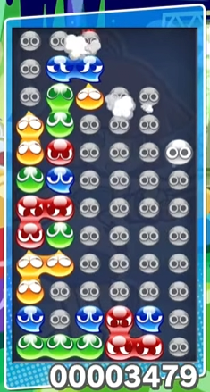
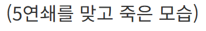
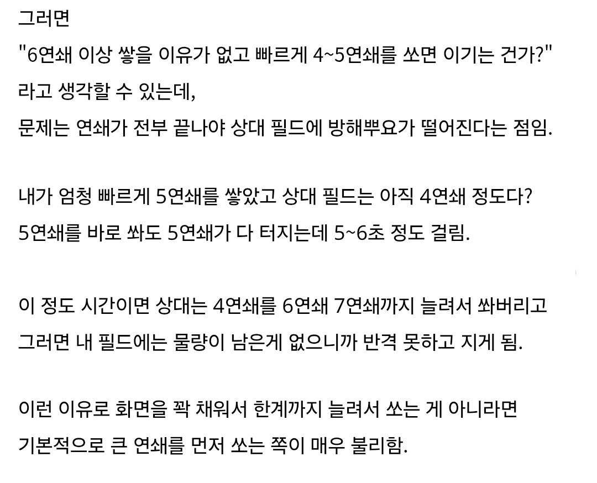
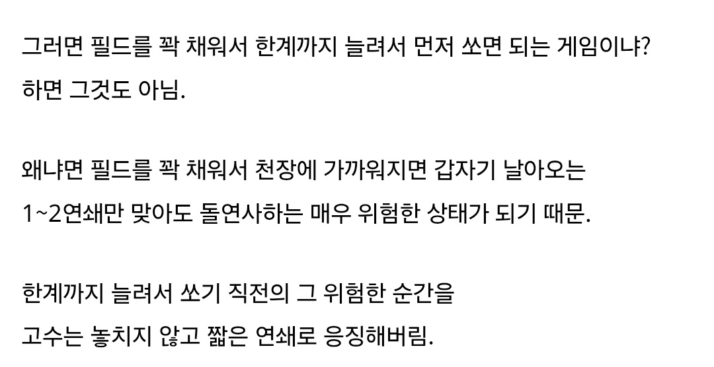
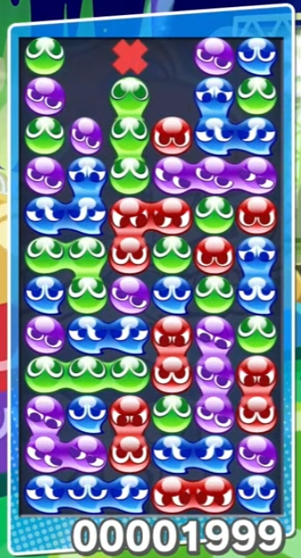
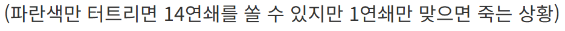
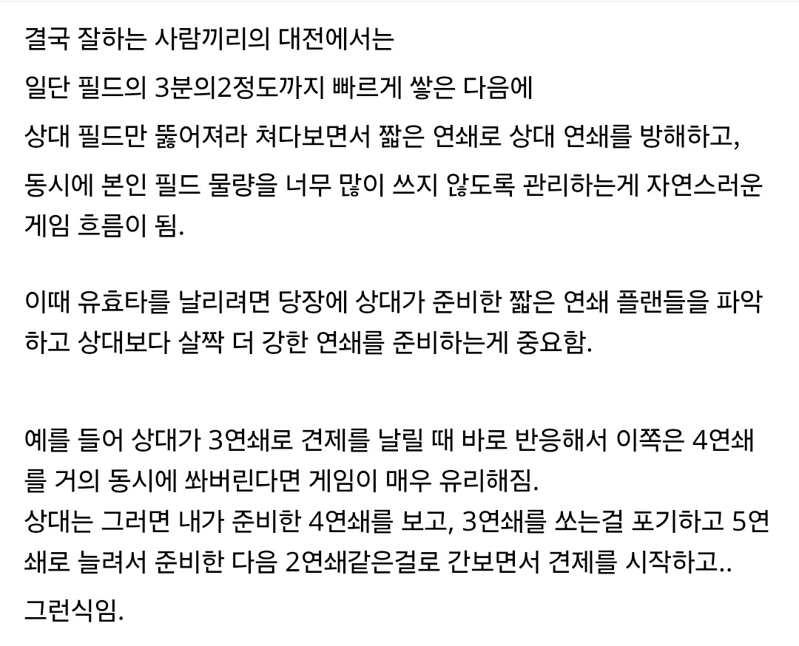
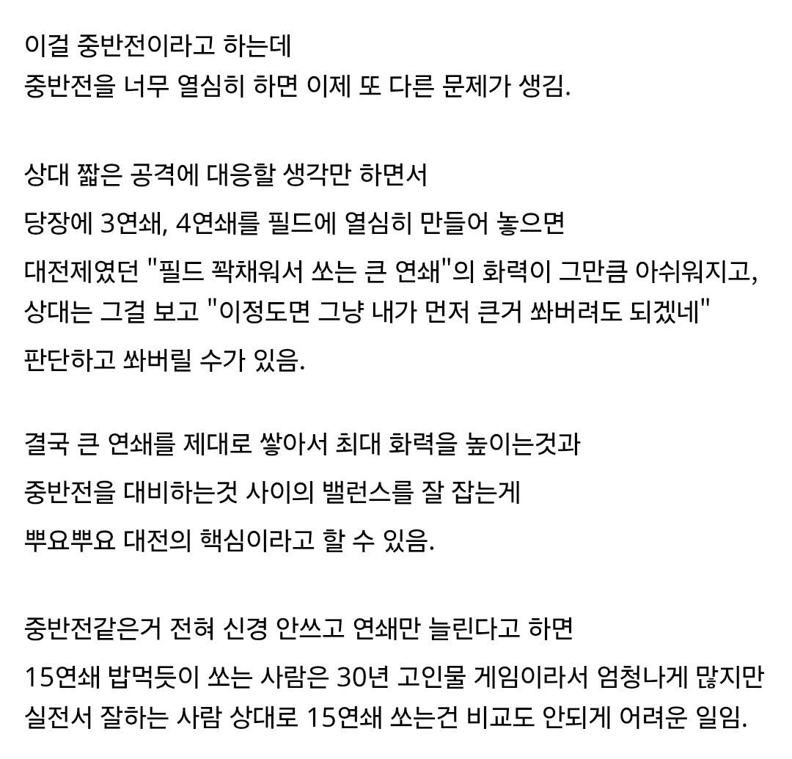
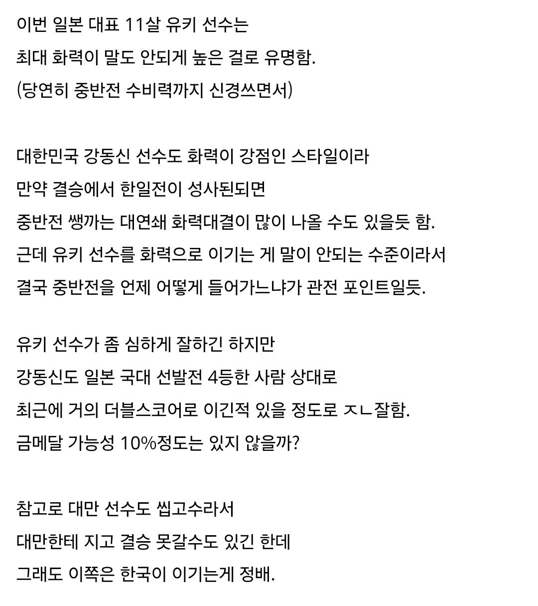
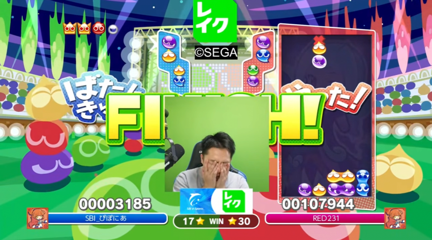
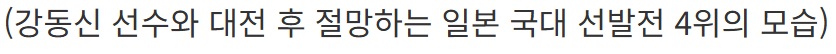
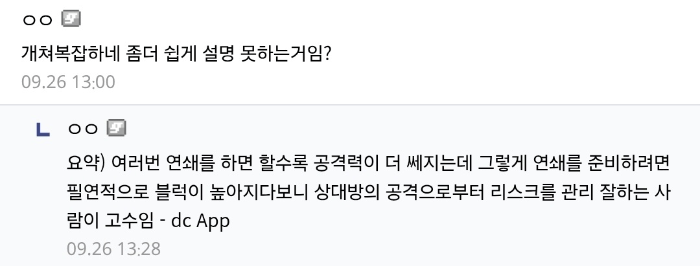
??: 아하...! 완벽하게 이해했어...!
고인물과 양민이 붙었을때의 모습













??: 아하...! 완벽하게 이해했어...!
고인물과 양민이 붙었을때의 모습
구작은 콤보 넣으면서도 쌓을 수 있었네
영상은 옛날버전인가 콤보쌓이면서 블럭도 내려오네
ㄴㄴ 오히려 최신 버전이고, 15주년 기념판인가 20주년 기념판인가 여튼 기념판으로 별의 별 모드 추가한 버전이 있음. 그 중 하나임. 연쇄중에도 뿌요가 내려오는 모드.
대회에서 쓰는 건 프로그램은 가장 최신판이긴 한데 게임 규칙은 뿌요뿌요 2 규칙이고.
아니 연쇄를 하는 도중에도 계속 쌓아서 연쇄를 유지하네 ㄷㄷ

빠요엔
저 캐릭 원작이 마도물어라는데 해본 할배들 있음?
당시 번들주던게 디스크 스테이션 잡지 였는데 내기억으론 꽤 고가였음 1.5 였나 2만이었나 그떄 게임피아 V챔프 같은 PC게임 잡지들이 7500원 정도 였는데 그래서 와레즈 에서 받아서 플레이 했던 기억이 있네요
msx2로 했었음. 나도 디스크 스테이션에 부록으로 들어있던 거였고 게임 자체는 3d 미궁을 다니면서 나타나는 몹 잡는 건데 일본어를 몰라서 그렇게 재밌진 않았음. 캐릭터가 귀엽긴 했었는데 난이도가 좀 있어서.
엉망진창 기말고사같은 미궁탐사류가 좀 유명했음
근데 그 외에도 의외로 캐릭터성 살린 자잘한 게임들이 많았음
좀 많이 틀딱같지만 한 20년도 더 전에 , 국내서 컴파일 지부(?)운영할때 온라인 게임 사이트도 운용했었음, 유저들이랑 여러가지 게임들 같이 할 수 있었는데… 생각보다 너무 빨리망해버린
고전 턴제게임들 한참할때 마도전기 엉망진창 기말고사에 쟤 나옴
게임 재밌던 기억이 있음
옛날에 잡지사면 부록으로 줬음 ㅋㅋ
ㅇㅇ..
국내에선 컴파일 게임중
뿌요뿌요2 , 환세취호전 이유명해거그럴뿐이지
그전부터
아루루랑 세죠가 근본이긴함
그러고보니 빠요엔이라는말 다른게임에서도 많이 썼던것같은데 요즘엔 아예 안쓰네
고인물/썩은물이라는 단어가 PvP에서의 빠요엔도 포함하는 개념이라 대체됨
이미 3:1로 한번 졌었는데 결승가서 복수할수 있을지는...흠
빠요엔이라는 효과음 빼고 뿌요뿌요가 뭔지도 모르는데 연쇄니 뭐니 ㅋㅋㅋㅋ 뭐 설명할때 저렇게 뭔가를 안다라고 전제하고 설명하는것처럼 무의미한 짓이 없는듯
이걸 보는 사람은 대충 뭔겜인지는 알거라 생각하는거겠지... 야구처럼 안타 홈런 삼진 정도는 안다고 생각하는거처럼..
개붕아 전제하고 설명한다는게 무슨말이야? 아무 설명도 없이 어려운 단어 쓰는거 너무 무의미한 짓 같아 ㅠㅠ
아 저 상대 필드창 위에 쌓이는 콤보 이미지 엄청 오랜만이네
어릴때는 어떻게 하는지 몰라서 그냥 막 쌓았는데
가끔 운빨로 저게 많이 쌓이면 신기해서 기분좋았던 기억이있음
어느정도 쌓은 상태에서 완성한 연쇄 안건드리고 견제 연쇄도 쌓는거임? 진짜 머리 터지겠네
돌이 방해물이면서도 총알이라는 얘기네
ㄹㅇ 아만보 그자체네 ㅋㅋㅋ
머리 존나 좋아야 할 듯... 그때그때 연쇄를 머리로 그리면서 대응해야 하니까... 혼자만 연쇄 잘 쌓는다고 되는 게 아니라 상대 공격도 대응해야하니
빠요엔의 유래가 뿌요뿌요 였구나
첨알았네
https://youtu.be/1D5Sv4XZZk4?si=oUObpIRtHDx-X0hs&t=532
사실 예전에 네이버블로그좀 가면 빠요엔넣는법 쌓는법 트릭 알려주던 강좌 블로그있었긴함.
https://youtu.be/rvBxX4gAYT8?si=BHnpQ1gaLAbNze5V
먼저 이거부터 하면 초반 연쇄 로직 어떻게하나 알려주더라.
일반인은 연쇄 쌓는것도 쉽지 않은데 굇수들은 상대방 반격 고려해가면서 내꺼 상대꺼 봐가며 연쇄를 쌓는다고? 진짜 천외천이구니 ㅋㅋㅋ
테트리스도 그렇고 저것도 그렇고 저 윗쪽 사람들은 일반인 수준으로 이해가 안됨
연쇄를 너무 길게 하면 연쇄 쌓일동안 공격을 준비할 수 있음. 연쇄 터지는 동안은 아무것도 못해서 상대방 연쇄보다 큰걸로 반격해버리면 상대방이 연쇄로 터지는 기간동안에 연쇄 카운터를 카운터 못쳐서 지게됨
몇연쇄 짜리인지 딱 보이는건가? ㄷㄷㄷㄷ
어릴 때 쌓을 줄 몰라서 그냥 맵 오른쪽부터 무지성으로 쌓고 운빨로 연쇄하던 기억 난다 ㅋㅋ
2층 개구리 새끼한테 빠요엔 몇번 당해보면 다 따라함ㅋㅋ
생각보다 복잡한 게임이었네 걍 존나 쌓아서 쌔게 터트리는놈이 이기는겜인줄로만 알았는데
뇨끼할배 살아있음?